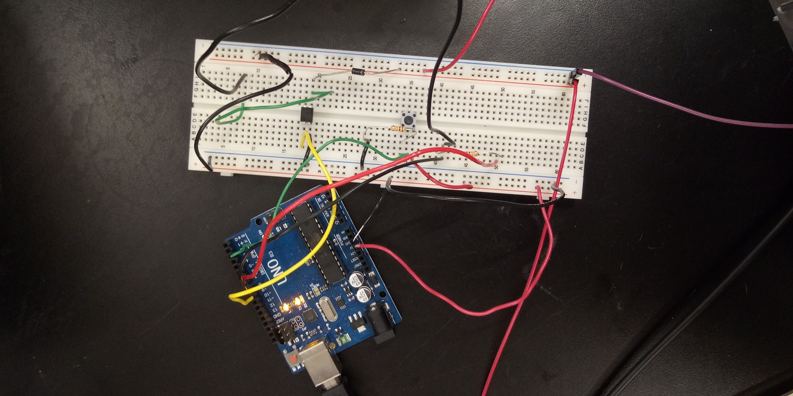

This week, I continued on my gear journey. I wanted to find a way to hook up sensors to my gear, to give the user control over the gear turning on and over the speed.
I began by hooking up a basic capacitance sensor to my circuit. At first, I was a little concerned about being electrocuted, but Victoria assured me there was nothing to fear up to 50V, and so I valiantly treked on. I had a bit of trouble making it work in my circuit, but I eventually figured out that I had to hook my circuit up to a generator for my capacitance sensor to work, and that it wouldn't just work off of the power that my computer supplied.
I also ran into a weird situation, where the pressing ground would only work when I was standing on the metal part of the ground. I think it had something to do with grounding, and for Victoria it only working when she touched the chair.
The code I used was rather just a modified version of the code from Arduino week. I just changed the condition to be dependent on whether the value of the sensor was greater than 20.
#include
CapacitiveSensor Sensor = CapacitiveSensor(7,8);
const int switchPin = 2; //keep track of pins (digital)
const int motorPin = 9;
int switchState = 0; //keep track of the switch
void setup() {
// put your setup code here, to run once:
pinMode(motorPin, OUTPUT);
pinMode(switchPin, INPUT);
Serial.begin(9600);
}
void loop() {
// put your main code here, to run repeatedly:
long sensorValue = Sensor.capacitiveSensor(300); //Change the number of samples to get the required timing and sensitivity.
switchState = digitalRead(switchPin);
Serial.println(sensorValue);
if (switchState == HIGH || sensorValue > 530) {
digitalWrite(motorPin, HIGH);
}
else {
digitalWrite(motorPin, LOW);
}
}
The sensor measures around 50 when I am not touching it, 90 when it is close, 130 for a light touch, and in the 200s when I firmly touch it. I wanted a larger signal to have more precision, however, so I switched from a 1mOhm resistor to a 10mOhm resistor. I also changed my code, to make it change speed as I approached it.
#include
CapacitiveSensor Sensor = CapacitiveSensor(7,8);
const int switchPin = 2; //keep track of pins (digital)
const int motorPin = 9;
int switchState = 0; //keep track of the switch
int N=1; //number to average
float sensorAve = 0;
int value = 0;
void setup() {
// put your setup code here, to run once:
pinMode(motorPin, OUTPUT);
pinMode(switchPin, INPUT);
Serial.begin(9600);
}
void loop() {
long int sum = 0;
// put your main code here, to run repeatedly:
//for (int i=1; i 255) {
value = 255;
}
analogWrite(motorPin, value);
}
Something I'd like to add on is a calibration period at the beginning, since the values of the capacitance sensor seem to vary a lot.